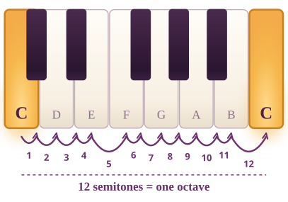

Ajourné into Music · Week 2
Interval reference
Every interval counted two ways: by letter names, and by semitones (keys, black and white). Play each pair on your own keyboard.

| Card | Name | Code | Notes | Semitones | Letter names |
|---|---|---|---|---|---|
| IP-00 | Perfect unison | P1 | C + C | 0 | 1 |
| IP-01 | Minor second | m2 | C + D♭ | 1 | 2 |
| IP-02 | Major second | M2 | C + D | 2 | 2 |
| IP-03 | Minor third | m3 | C + E♭ | 3 | 3 |
| IP-04 | Major third | M3 | C + E | 4 | 3 |
| IP-05 | Perfect fourth | P4 | C + F | 5 | 4 |
| IP-06 | Tritone | A4/d5 | C + F♯ (or C + G♭) | 6 | 4 |
| IP-07 | Perfect fifth | P5 | C + G | 7 | 5 |
| IP-08 | Minor sixth | m6 | C + A♭ | 8 | 6 |
| IP-09 | Major sixth | M6 | C + A | 9 | 6 |
| IP-10 | Minor seventh | m7 | C + B♭ | 10 | 7 |
| IP-11 | Major seventh | M7 | C + B | 11 | 7 |
| IP-12 | Perfect octave | P8 | C + C | 12 | 8 |
Counting: one semitone is the very next key, white or black. Letter names are counted inclusively (C to E is C D E = 3). No colour or shape carries meaning here.